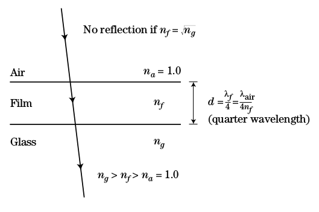
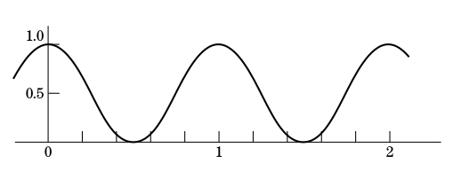
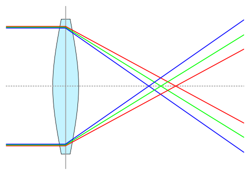

#Soal 1. Perambatan Gelombang Elektromagnetik(EM) pada metal harus memperhatikan parameter dari medium antara lain permitivity ($\epsilon$), permeability ($\mu$) dan resistivity ($\eta$). Parameter resistivity metal dinyatakan dengan \(\eta = \frac{m_e.v_e}{n_0 e^2}\ (\Omega.m)\) dimana $m_e$ = massa elektron (kg), $n_0$ = kerapatan elektron ($m^{-3}$), $v_e$ = frekuensi tumbukan elektron ($s^{-1}$), e = muatan elektron (C). Persamaan untuk gelombang E dinyatakan dalam \(\frac{\partial^2E}{\partial x^2}=\epsilon\mu\frac{\partial^2E}{\partial t^2}+\frac{\mu}{\eta} \frac{\partial E}{\partial t}\) Untuk kasus perambatan pada metal diasumsikan solusi persamaan gelombang adalah:
\[\mathbf{E(x,t)=A(x)sin(kx - \omega t)}\]
pada frekuensi tinggi diasumsikan faktor $\mu\epsilon\omega^2E\ <<\ \mu\omega E/\eta$ sehingga dapat disederhanakan menjadi persamaan difusi (diffusion equation).
petunjuk : \(\frac{\partial (A(x)sin(kx-\omega t))}{\partial t}=-\omega A(x)cos(kx-\omega t)\) \(\frac{\partial (A(x)sin(kx-\omega t))}{\partial x}=\frac{dA}{dx}sin(kx-\omega t)+kA(x)cos(kx-\omega t)\) Misalkan diasumsikan: $A(x)=A_0 e^{-\gamma x}$ dimana $\gamma$ adalah variabel bebas
#Soal 2. Untuk membuat suatu lensa kaca mat tidak terjadi refleksi maka diperlukan lapisan tipis (film) dengan ketebalan tertentu. Tetapi syarat ini tidak mencukupi untuk menghasilkan anti refleksi secara maksimal. Jika $\Gamma_1$ dan $\Gamma_2$ adalah koefisien refleksi dari air to film dan film to glass. $(\Gamma_1 = \frac{1-n_f}{1+n_f}\ \ dan\ \ \Gamma_2 = \frac{n_f-n_g}{n_f+n_g})$

#Soal 3. Suatu experimen berbasis konsep Young celah ganda digunakan untuk menentukan panjang gelombang ($\lambda$) sumber cahaya monochromatic. Jika beda fasa dinyatakan : $\phi = \frac{2 \pi}{\lambda}(x_2 - x_1)$, $(x_2 - x_1) = d sin\theta$ dengan asumsi sudut $\phi$ kecil.


#Soal 4. Salah satu masalah yang membuat citra bayangan tidak tajam pada lensa adalah chromatic aberration
